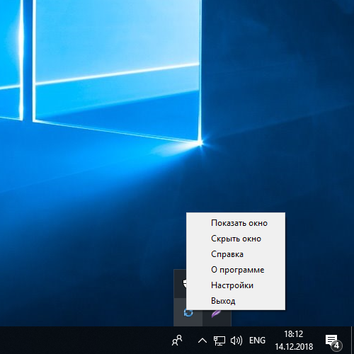
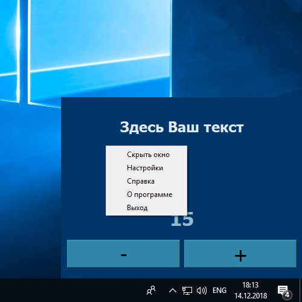

Программа предназначена для отображения разного рода наоминаний на рабочем столе. Программа определенное время (задается пользователем в окне настроек) показывает окно справа внизу экрана и затем прячет его на время, так же определяемое пользователем в окне настроек. Доступ к программе всегда можно получить через контекстное меню значка программы в системном трее справа внизу. Через окно настроек можно задать любой текст, задать шрифт и цвет текста. С помощью имеющегося счетчика можно вести персональный учет. Например, пользователь программы хочет приучить себя сидеть ровно за компьютером. Через заданное им время программа будет показывать окно. Если пользователь в это время сидит ровно, то он нажимает кнопку +, в противном случае - кнопку - . Задача - набрать максимальное количество баллов.

Контекстное меню значка программы в системном трее.
Контестное меню главного окна программы.
Форма настроек позволяет задать следующие параметры.

Окно выбора шрифта для текста.
 Окно выбора цвета текста.
Окно выбора цвета текста.